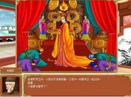
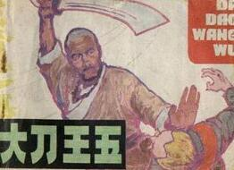

我们团队就是要战胜ABT，没有什么是不可能的，我们的团队非常强悍，有厉害的张三，有很厉害的李四，有很很很厉害的王五。
张三
李四
王五
张三是北京人，常年生活在山顶洞，因为除了打猎就是打猎，常常无聊透顶。时间非常充足，所以他幼年自学Java、C、PHP等多门编程语言，精通Android、IOS等移动开发，早年在ABT之类的国内知名企业工作，25岁进入华为，直逼高层，去年的时候因为34岁了，要成家立室，主动提出离职，任大哥很是欢喜。
李四是武汉人，小时候被称为二狗子，长大了依然被称为二狗子。在我们团队里他主要是负责看门，这个职位我们是深思熟虑之后才建立的。如果没有编程思想的人进入我们公司，他就会大叫三声，那三声可谓惊天地泣鬼神。我们听到他的叫声后会出到公司门口举行欢迎方式迎接来宾，毕竟很久没人上门了，万一是客户呢！！如果是面试者，我们会暴打他一顿，害我们白欢喜一场。
王五是京师武林名侠。本名王正谊，字子斌，祖籍河北沧州，回族。因他拜李凤岗为师，排行第五，人称“小五子”；又因他刀法纯熟，德义高尚，故人人尊称他为“大刀王五”。王正谊一生行侠仗义，曾支持维新，靖赴国难，成为人人称颂的一代豪侠。位列民间广泛流传的晚清十大高手谱中，与燕子李三、霍元甲、黄飞鸿等著名武师齐名。